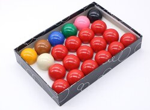
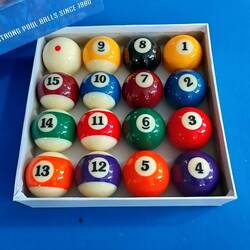
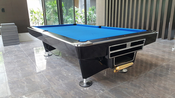
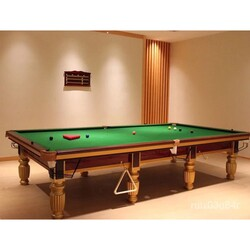
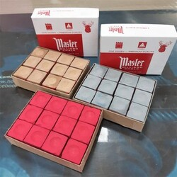
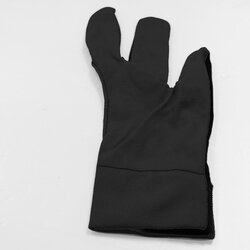
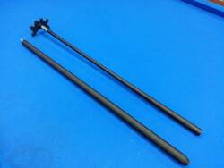

撞球桿可分為：斯諾克球桿、九號球球桿、衝跳桿、衝桿(開球用桿)、跳桿(跳球用桿)。球桿按用途可大致分為兩類：斯諾克桿和九號球桿。前者桿頭較細，護套為銅質，桿尾削去一角並鑲嵌商標;後者桿頭較粗，護套為白色塑膠質，桿尾無缺角。兩者在手感上也有很大區別：斯諾克桿皮頭小巧，因此擊球點精確，最適於打斯諾克，但絕對力量稍差;而九號球桿皮頭大，正適合於打大球，因為擊球點不如小皮頭那樣準確，所以有些人開始會不習慣，但九號球桿力量足、彈力大，用熟了後可以打出令人驚嘆的強烈鏇轉球，這也正是九號球的魅力所在。
球桿分四個面，上，下，左，右。上，下是正反面，左，右都是側面，側面是一條條木紋排例著，一般都有略微斜度，木紋和木紋的交叉處就叫箭嘴，箭嘴又叫箭頭。當然，有的球桿側面的木紋和球桿是幾乎垂直的。這要看是如何選料和切割了。這種球桿在選料和切割方面下了工夫，使球桿的外表非常的好看。幾個箭嘴都向著桿頭的方向是正面，這種箭頭叫正箭頭。反面的箭頭則是向著桿尾，叫反箭頭。當然，反面也有呈橢圓形的，有向上的箭頭也有向下的箭頭，還有一種叫雙箭頭，正反面的箭頭都是向著桿頭的方向。這種木料很難選，一般都用在高檔球桿的前枝。
撞球是用硬質材料製成的質地均勻球體，早期的球是用上好象牙製成的，現在使用的球大多是用高級塑膠製成，塑膠球彈性韌性都較好，表面光滑，質地均勻，重心位置準確，圓度精確，不易變形。斯諾克球的球直徑為52.5mm ,重量154.5kg。
一般的撞球含1顆白色母球及編號1-15號的彩球，1-8號為單一顏色的彩球，而11-15號則為白色及其他顏色所組成的條紋彩球。而司諾克撞球上則無編號，由1顆白色母球及21顆色球組成，分別是15顆紅球，1顆綠球，1顆黃球，1顆粉紅球，1顆棕色球，1顆藍色球及1顆黑球。
 撞球桌主要分為兩種，一種是一般花式撞球桌，另一種則是司諾克撞球專用的司諾克式撞球桌。
花式撞球桌的標準桌面大小大約是280cm x 160cm，球桌一般都是用堅硬木材製成，特別是球桌四周，一般都採上等硬質木材，如柚木、橡木、櫻木、楸木、菲律賓木等高級木材製作，這樣邊框彈性大，耐撞擊，在木質邊框上還要鑲一條三角形橡膠邊條，以增加邊框彈性，在橡膠台邊上還包裹一層尼龍。 桌面一般由3到4塊石板鋪成，石板經過磨平，表面光滑，接縫須嚴密無縫隙，石板桌面上再鋪一層綠色尼龍，使桌面有一定摩擦力。而司諾克式撞球桌的大小則較花市撞球桌稍大，約為365cm x 182cm。 桌面四個角落以及兩邊長邊中心位置各有一個球洞。而材質則與花式撞球桌類似。
 巧克是撞球比賽中打者於出桿前塗抹在皮頭前端平面上，防止出桿擊球時因皮頭平面變得光滑而造成滑桿的粉塊，為每邊長2公分的立方體，屬於消耗性器材，主要成分是矽土和剛鋁石，具有一定的硬度並可擦出適當的粉狀顆粒。
架桿器則是撞球比賽中，打者用來支撐球桿以便出桿打擊距離較遠母球的器材。當打者於出桿前發覺母球與架桿位置之間距離過長，因為其身材的限制而無法順利做好架桿及利用母球撞擊目標球時，可選擇使用架桿器做為架桿手的延伸，縮短與母球之間的距離，以期維持準確的擊球。
撞球專用手套通常為一副只包覆左手拇指、食指及中指的手套，目的為減少球桿與手的摩擦並增加擊球時的準確度及減少長時間磨擦對手指及虎口造成的不適。
  